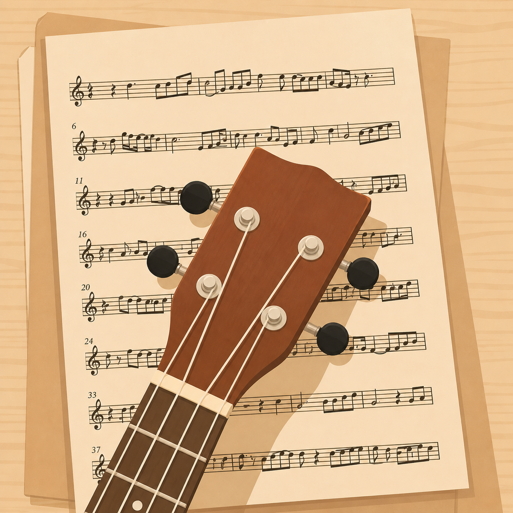
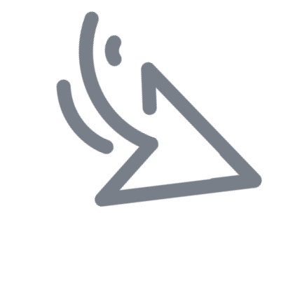
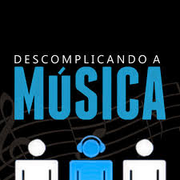

Foque primeiro nos acordes básicos,
pratique trocas simples e escolha músicas que você goste de ouvir.
A prática constante é o que realmente faz diferença.
Mesmo alguns minutos por dia já ajudam no seu desenvolvimento.
Uma boa forma de começar é cantar junto com músicas mais calmas e tentar acompanhar as notas com cuidado.
Ouvir bastante música,
praticar exercícios vocais e gravar sua própria voz
também pode ajudar a perceber sua evolução ao longo do tempo.
Sentir vergonha ao se aprentar é algo muito comum, principalmente no começo. Muitas vezes o medo do julgamento nos congela.
Comece em ambientes onde você se sinta confortável, como sozinho no quarto ou
perto de pessoas de confiança. Aos poucos, pequenas experiências ajudam a construir mais segurança e confiança.
🎤︎︎ | Cante sua música favorita por 1 minuto.
𓏲ּ𝄢 | Aprenda um acorde novo no seu instrumento favorito.
𖦹 | Apresente-se para alguém de confiança.
Por fim, compartilhe sua experiência com a comunidade e inspire outras pessoas!